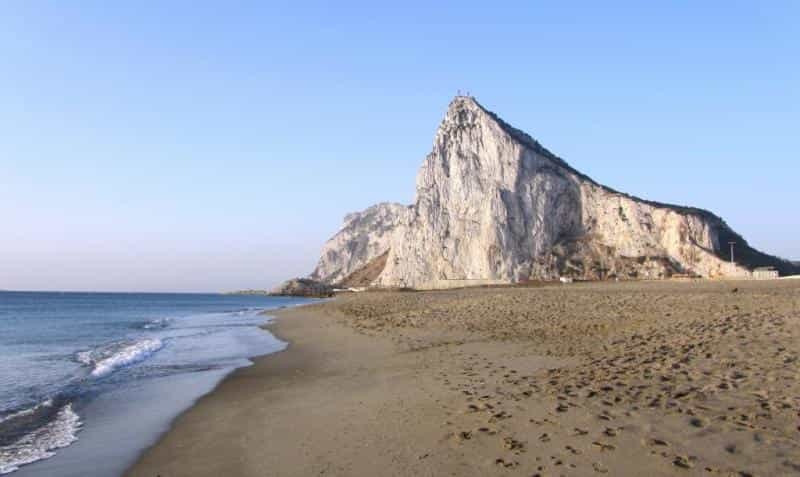
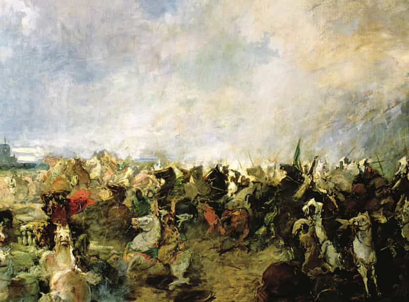
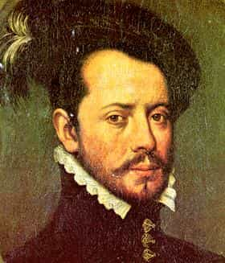
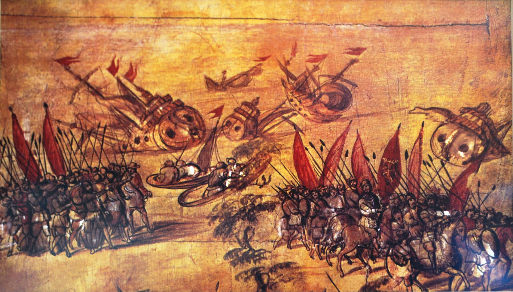
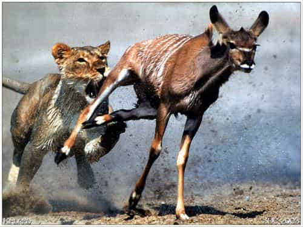
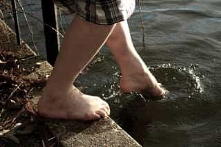

< < < Back
How To Harness The Power of Fear – Return Of Kings
“Great achievers are driven, not so much by the pursuit of success, but by the fear of failure.”
-Larry Ellison
On April 11 (or April 29) 711 AD, an army of 7,000 soldiers under the command of an aged, 75 year old Berber general named Tariq bin Ziyad, crossed the straits of Gibraltar to land at Mons Calpe, with the help of Julian, a Spanish nobleman who was the Count of Ceuta.
Little did Tariq know that he was destined to be the general responsible for leading the Arab conquest of Visigoth Hispania, and that his name would be etched forever as one of the most important military commanders in Iberian history. Tariq bin Ziyad is known in Spanish history and legend as Taric el Tuerto—Taric the one–eyed—a defect he supposedly made up for by being ambidextrous.
According to legend, Julian’s daughter Florinda had been raped by Roderick–the Visigoth ruler of Spain–after she was customarily sent to Roderick’s court to receive an education after he came to power. Julian was so incensed that he resolved to have the Arabs bring down the Visigoth kingdom. Accordingly he entered into a treaty with Tariq, to secretly convey the Arab army across the Straits of Gibraltar, as he owned a number of merchant ships and had his own forts on the Spanish mainland.
Tariq had recently been appointed as the governor of Tangiers by Musa bin Nusayr, the Arab governor of North Africa of that time. Julian further encouraged Musa to invade Iberia, telling him of the people’s sufferings and the injustice of Roderick, while giving him a cause for conquest by apprising him of the innumerable riches, palaces, gardens and beauties of Hispania that would be found (while secretly being incensed for Roderick’s rape of his daughter). Julian even supplied guides for Tariq’s army.
After landing his army, Tariq concentrated his troops onto the hill of Mons Calpe, now known as Gibraltar – a Spanish derivation of the Arabic name Jebel Tariq meaning “Mountain of Tariq”.

According to legend, he ordered the burning of the ships that had brought his troops from Africa. Tariq remained unmoved by the appeals of his soldiers who wondered as to how they would return.
In reply, he gave an inspirational historic speech to his soldiers to motivate them for battle, from which below is an excerpt:
“Oh my warriors, whither would you flee? Behind you is the sea, before you, the enemy. You have left now only the hope of your courage and your constancy. Remember that in this country you are more unfortunate than the orphan seated at the table of the avaricious master. Your enemy is before you, protected by an innumerable army; he has men in abundance, but you, as your only aid, have your own swords, and, as your only chance for life, such chance as you can snatch from the hands of your enemy. If the absolute want to which you are reduced is prolonged ever so little, if you delay to seize immediate success, your good fortune will vanish, and your enemies, whom your very presence has filled with fear, will take courage. Put far from you the disgrace from which you flee in dreams, and attack this monarch who has left his strongly fortified city to meet you. Here is a splendid opportunity to defeat him, if you will consent to expose yourselves freely to death. Do not believe that I desire to incite you to face dangers which I shall refuse to share with you. In the attack I myself will be in the fore, where the chance of life is always least.”
This emboldened his soldiers enough to rout a more sophisticated and bigger Visigoth force in the Battle of Guadalete, opening the way for the subsequent capture of the Visigoth capital of Toledo by Tariq’s irrepressible forces, and the rest is history.

An example replicated through history
Tariq’s example had been replicated before and after him by a lot of famous generals to successfully motivate their soldiers to often achieve battle greatness in human history.
In 334 BC, Alexander the Great flamboyantly burned his ships upon arriving in Persia. As his few thousand troops were facing a few hundred thousand of the enemy, one of his commanders asked, “How will we get home?” Alexander replied laconically, “We’ll use their ships.”
Similarly, in February 1519, Hernán Cortés, already a wealthy Conquistador, accompanied by about 11 ships, 500 men, 13 horses and a small number of cannons, landed in the Yucatan Peninsula in Mayan territory (modern-day Mexico). He wanted to accomplish something that one man could not—to conquer the vast treasures of the Aztec empire.

By landing in Veracruz (modern-day Mexico) with his men, Cortés acted in defiance to the Governor of Cuba of that time (Velazquez), and put himself under the direct command of King Charles of Castile. So single-minded and focused was he on his objective to conquer the Aztec empire, that unfazed by the scarce supplies and rampant disease his men were facing, he uttered three historic words to his men after landing on the shores of Veracruz: “Burn your boats”.

Two years later, in August 1521, Cortés led a coalition army of Spanish forces and native Indian warriors and captured the Aztec emperor Cuauhtemoc (Guatemozin) and Tenochtitlan—the capital of the Aztec Empire—to annex the Aztec Empire to Spanish suzerainty.
Survival of the fittest
What was their secret of success? These great men simply used the power of fear as motivation.
Everyone wants to be free of fear. To be free from fear, one must return back to one’s comfort zone. The definition of a comfort zone varies for each person. But the most primal of comfort zones for every living being is the security of life.
And the most primal of fears every living being has is the fear of death—a fact well explored by the English philosopher Thomas Hobbes, in his book Leviathan.
Fear generates the adrenaline response of “flight or fight”. Eliminate the option of flight, and the only option left is to fight. Whether it may be in the wild or in the domestic world, all creatures struggle the hardest when it comes to their basic survival. Humans are no different, for the desperation and urgency brought by the fear of death, or the will to live, is what often compels humans into superhuman acts of courage, strength and achievement due to the desperation created by that fear. Desperate circumstances call for desperate actions, for one is out of one’s comfort zone.

CONQUER, OR DIE. EAT, OR BE EATEN.
Tariq and Cortes pushed their soldiers to their limits, to reject failure, to make them struggle to return back to their comfort zones. What was better than the fear of death without an option of retreat, so as to rid their soldiers of complacency or mutiny, to awaken their spirit of self-preservation which would force them to fight till the very end? By burning their ships, they made it sure to their soldiers that there was only one way to go— to fight to win, to survive.
Fear can create Power
“Forget safety. Live where you fear to live.”
-Rumi
The transmutation of fear into drive and courage often yields success, power and achievement.
Great entrepreneurs have always used fear as a motivation to smash through obstacles, to drive through the wall which prevented them from achieving success, to motivate their employees similarly like Tariq and Cortes, ultimately creating power and success.
The fear of failure, the fear of living an ordinary complacent life, and the fear of not living up to one’s true desires, potential or ideals have all been the motivators for ordinary people to come out of their comfort zones to push themselves beyond their own limits. The fear of losing power, after having achieved it can also create an unstoppable drive to retain it. Motivation without fear often leads to a lack of commitment, ultimately yielding mediocrity.
You cannot toe-dip if you want to achieve success in any endeavor.

Face your fears
One of the reasons for the greatness of the human species is its adaptability to uninhabitable, fearsome conditions by using its intelligence (the highest amongst all species on this planet). Yet the numbing fear of such circumstances has not prevented mankind from successfully adapting to them, and has also led mankind to transmute those fears to not only conquer this earth, but also penetrate into regions of deep oceans and outer space. Mankind could not have discovered the immense hidden power within itself had it chosen to cower in face of those fears.
We’ve all come a long way, and we’ve still got a long way to go. On that path full of challenges, it’s up to you to rise up to your fears, realize your potential, and eventually achieve greatness.
Read More: Mike Tyson On Fear Part II


{kind=link}
{kind=link}
{kind=link}
{kind=link}
{kind=link}
{kind=link}